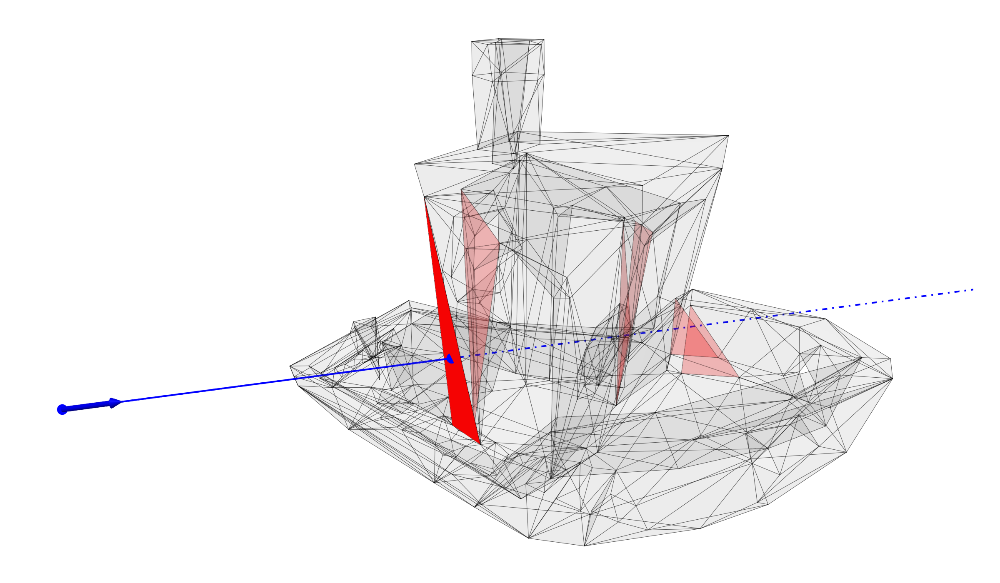

Meshes
For flat surfaces and placeholder objects, BMO offers a mesh-based geometry representation via the Mesh type. Meshes offer an easy but inaccurate way to represent geometry via a tessellation based surface interpolation with triangles. In general it is not recommended to use meshes for anything other than flat surfaces or .stl imports for visualization purposes. The point of intersection is calculated via the Moeller Trumbore algorithm [24].
Meshes can be loaded from .stl files via the FileIO package.
BeamletOptics.Mesh — Type
Mesh <: AbstractMeshContains the STL mesh information for an arbitrary shape, that is the vertices that make up the mesh and a matrix of faces, i.e. the connectivity matrix of the mesh. The data is read in using the FileIO.jl and MeshIO.jl packages. Translations and rotations of the mesh are directly saved in absolute coordinates in the vertex matrix. For orientation and translation tracking, a positional and directional matrix are stored.
Fields
vertices: (m x 3)-matrix that stores the edge points of all trianglesfaces: (n x 3)-matrix that stores the connectivity data for all facesdir: (3 x 3)-matrix that represents the current orientation of the meshpos: 3-element vector that is used as the mesh location referencescale: scalar value that represents the current scale of the original mesh
BeamletOptics.Mesh — Method
Mesh(mesh)Parametric type constructor for struct Mesh. Takes data of type GeometryBasics.Mesh and extracts the vertices and faces. The mesh is initialized at the global origin. Data type of Mesh is variably selected based on type of vertex data (i.e Float32).
Moeller Trumbore algorithm
The Moeller-Trumbore-algorithm tests the intersection of a ray with the mesh by testing against each individual face.
BeamletOptics.MoellerTrumboreAlgorithm — Function
MoellerTrumboreAlgorithm(face::Matrix, ray::Ray)A culling implementation of the Möller-Trumbore algorithm for ray-triangle-intersection. This algorithm evaluates the possible intersection between a ray and a face that is defined by three vertices. If no intersection occurs, Inf is returned. kϵ is the abort threshold for backfacing and non-intersecting triangles. lϵ is the threshold for negative values of t. This algorithm is fast due to multiple breakout conditions.
Below a visualization is provided for a Benchy mesh. The ray, colored in blue, intersects multiple faces of the mesh, colored in red. The shortest face intersection is assumed to be the correct one. Note that the normal vector at the point of intersection is calculated for the entire face. This makes the mesh-based geometry representation unsuitable for curved geometries, e.g. lens surfaces, since refraction and reflection calculations require accurate normal vectors.
